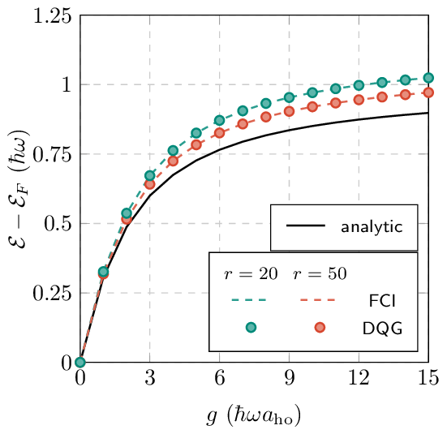
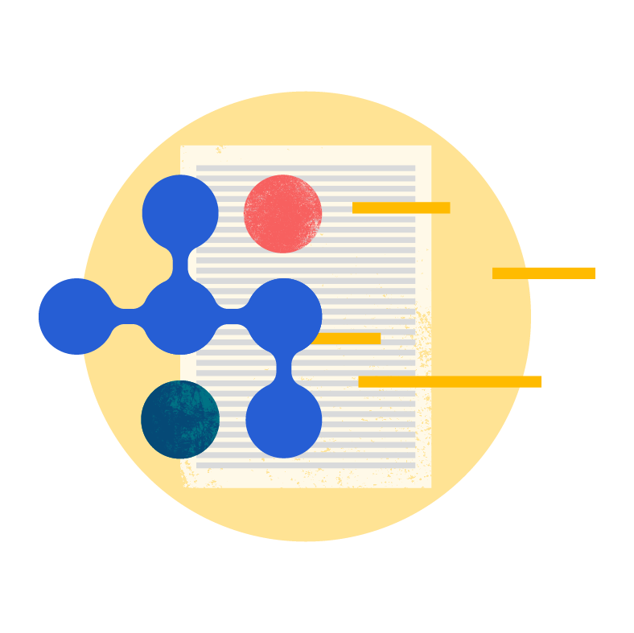
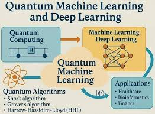

GSE Calculator — Variational Quantum Eigensolver Python · Cirq · VQE · Quantum Simulation Designed and implemented a quantum-computing based model to calculate the Ground State Energy of molecules using VQE. Repository 
Scholar Graph — ML-driven Knowledge Graph Python · NLTK · Knowledge Graph Construction ML-driven knowledge-graph generation to extract concepts and relationships from academic text. Repository 
QML AND Classical ML Python · Cirq · ML Stock Volitality prediction using both Classical and Quantum Machine Learning Model. Repository 